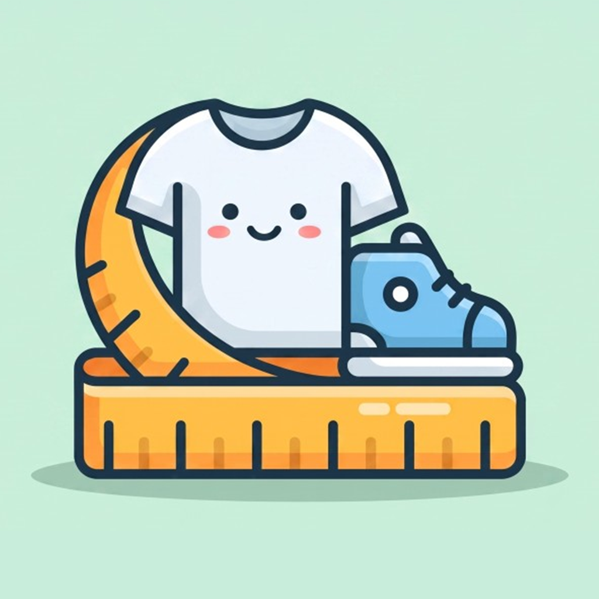
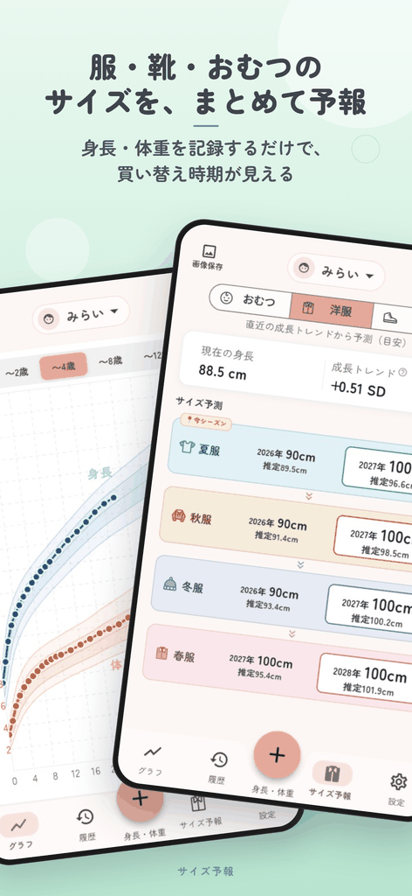
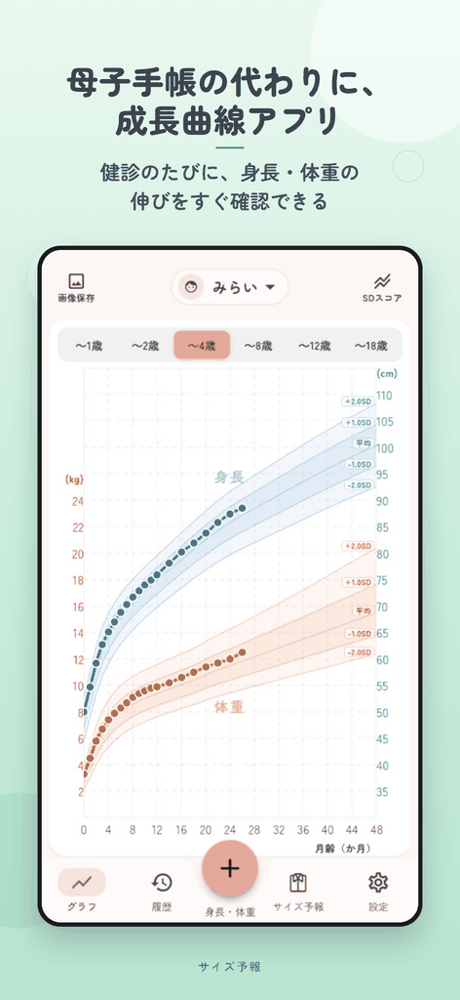
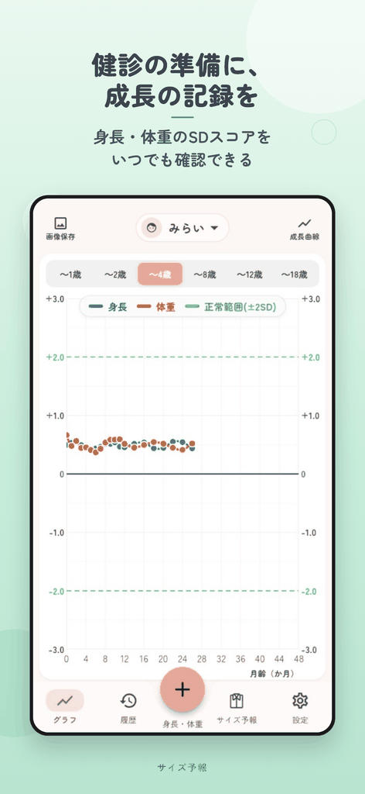
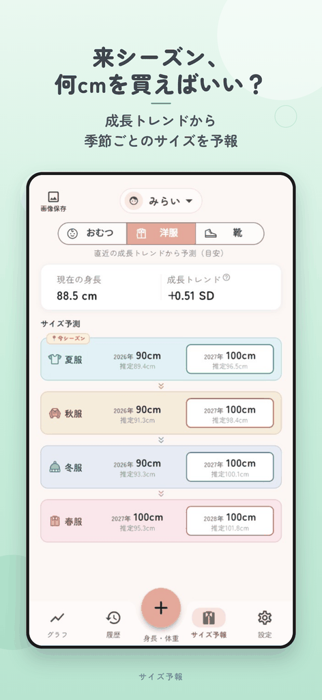
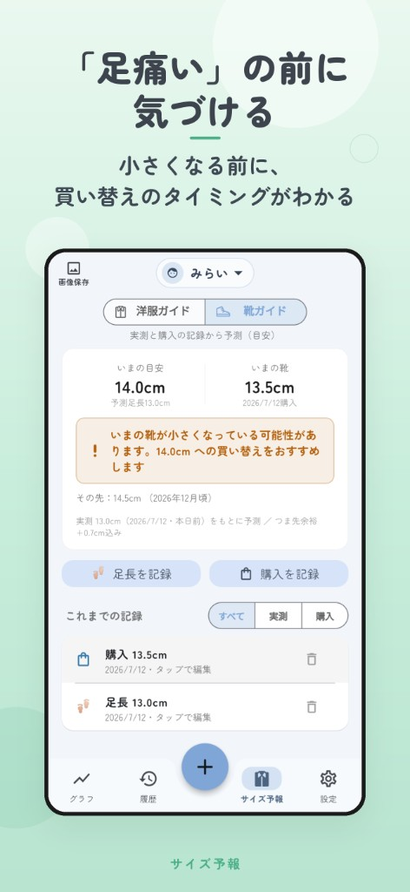
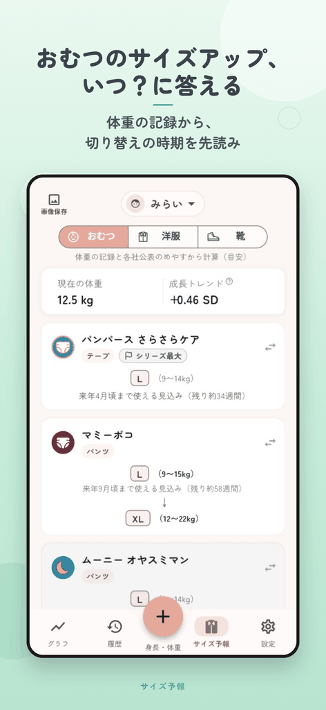

サイズ予報
来シーズン、何cmを買えばいい？
身長・体重・足の記録から、服・靴・おむつの「次のサイズ」と買い替え時期の目安がわかる子育てアプリです。

App Store・Google Play で公開予定／主要機能は無料で使えます

来シーズン、何cmを買えばいい？
身長・体重・足の記録から、服・靴・おむつの「次のサイズ」と買い替え時期の目安がわかる子育てアプリです。
App Store・Google Play で公開予定／主要機能は無料で使えます
「気づいたら小さくなっていた」を、成長の記録から先回りします。
いまの成長トレンドから、来シーズンに着るサイズ（80・90・100…）を先読み。セールでの「来年用の買い物」に自信が持てます。
「セールで買った来年用の服、着せる頃には小さかった…」
足長の実測からいまの目安を表示。小さくなる前に買い替えのタイミングがわかります。Pro版なら「次に買うサイズと時期」まで先読みできます。
「『足痛い』と言い出して、慌てて靴を買いに走った」
メーカー公表の対応体重とお子様の体重記録から、いまの目安サイズと切り替わりの時期を表示。よく使うブランド・シリーズを登録して使えます。
「おむつのサイズアップって、結局いつすればいいの？」






予報のもとになる成長記録も、健診や共有でそのまま使える形で残せます。
日本小児内分泌学会が公開する標準値に基づく成長曲線に、身長・体重をプロット。SDスコア（同年齢の平均からの離れぐあい）の推移もひと目でわかります。
健診や小児科の受診時にそのまま見せられる、A4・1枚のレポートを出力。成長の経過説明がスムーズに。
画面上部のお名前をタップすれば、すぐにきょうだいの記録へ。アイコンとテーマカラーで、誰の画面かひと目でわかります。
成長曲線は0歳から18歳まで対応。過去の測定値も日付を指定して入力できるので、これまでの記録を引き継げます。
毎年のお誕生日の写真と身長・体重を、成長の記録としてアルバムに残せます。
ファイル書き出しによる手動バックアップのほか、Pro版ではオンライン自動バックアップに対応します。
早産児など出産予定日ベースの修正月齢に対応。成長曲線の横軸を、暦月齢と修正月齢で切り替えられます。
Pro版の画像保存では、グラフやサイズガイドをこんな正方形の画像で保存できます。家族へのメッセージやSNSにそのまま使えます。
主要機能は無料。靴の先読み予報・画像保存・自動バックアップなどはPro版でご利用いただけます。
0円
※広告が表示されます
月額300円／年額2,800円（月あたり約233円）
無料版の全機能に加えて
| 機能 | 無料版 | Pro版 |
|---|---|---|
| 成長曲線・SDスコア | ○ | ○ |
| 洋服サイズの目安 | ○ | ○ |
| おむつサイズの目安・切り替え予報 | ○ | ○ |
| 靴のいまの目安 | ○ | ○ |
| 靴の次の購入予報 | — | ○ |
| 受診レポート（PDF） | ○ | ○ |
| グラフ・ガイドの画像保存（正方形） | — | ○ |
| お誕生日アルバム | ○ | ○ |
| 手動バックアップ（書き出し） | ○ | ○ |
| オンライン自動バックアップ（写真を除く） | — | ○ |
| 修正月齢表示 | ○ | ○ |
| お子様ごとのアイコン・テーマカラー | ○ | ○ |
| 広告 | 表示あり | 非表示 |
料金は税込です。定期購入は自動更新され、各ストアのアカウントに請求されます。 解約は App Store または Google Play の定期購入設定から行えます。
App Store・Google Play で公開準備中です
リリース通知を受け取る服や靴のサイズで迷ったときに役立つ、保護者向けの記事をまとめていきます。
子どもの服を買うたびに、「来シーズンは何cmだろう」と迷ったことが、開発のきっかけです。成長の記録を残すだけでなく、毎日の買い物にも役立てられるアプリを目指しています。
開発・運営：MIYA APPS
成長曲線の記録・洋服やおむつサイズの目安・受診レポート（PDF）・お誕生日アルバムなど、主要な機能は無料でお使いいただけます。靴の次の購入予報・画像保存・オンライン自動バックアップはPro版の機能です。
使えます。身長・体重・足長それぞれ1件の記録から目安を表示します。記録が増えるほどお子様ご自身の成長トレンドが反映され、予報が安定します。
成長曲線・SDスコアは0歳から18歳まで記録できます。洋服サイズ予報は身長50〜160cmのJISサイズ帯に対応し、おむつ・靴の予報は乳幼児期を中心にお使いいただけます。
いいえ。直近の記録と標準値から算出した目安です。成長には個人差があり、衣類・靴・おむつは商品によって着用感も異なります。購入時は実寸や試着結果もあわせてご確認ください。
日本小児内分泌学会が公開している、2000年の乳幼児身体発育調査（厚生労働省）と学校保健統計（文部科学省）をもとにLMS法で作成された標準値を使用しています。
自動インポートには対応していませんが、過去の測定値を日付を指定して入力できます。健診のタイミングの値だけでも入力すれば、これまでの成長曲線を再現できます。
基本はお使いの端末の中に保存されます。Pro版のオンライン自動バックアップを有効にした場合のみ、暗号化された通信でクラウドに保存されます。なお、写真（お子様のアイコン・お誕生日の思い出）はバックアップを有効にしてもクラウドへ送信されず、端末内にのみ保存されます。詳しくはプライバシーポリシーをご覧ください。
早産などで生まれたお子様は、出産予定日をもとにした修正月齢で成長を見ることがあります。登録時に設定でき、成長曲線の表示を暦月齢と修正月齢で切り替えられます。
本アプリは医療機器ではなく、診断には使えません。発育・健康について気になることがある場合は、健診やかかりつけの小児科医・保健師にご相談ください。
ご利用上の注意：本アプリは保護者がお子様の成長を記録・整理するためのツールです。表示される数値は統計的な基準に基づく目安であり、医療機器ではありません。お子様の発育・健康について気になることがある場合は、乳幼児健診やかかりつけの小児科医・保健師にご相談ください。